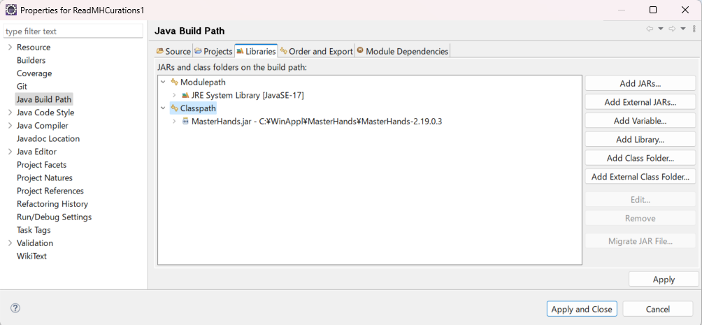

RS Mass-spec for Java
ver. ???
Information extraction from MasterHands project
Use Test_MHCurBase1_?.java
During development by Eclipse, make sure to add MasterHands.jar (tested on 2.19.0.3)
to class path of libraries (Use add external JAR button).

From the command line, you may try, for example:
- javac -classpath C:\WinAppl\MasterHands\MasterHands-2.20.0.2\MasterHands.jar Test_invoke1.java
- java -classpath C:\WinAppl\MasterHands\MasterHands-2.20.0.2\MasterHands.jar; Test_invoke1
You need a space between ";" and "Test_invoke1".